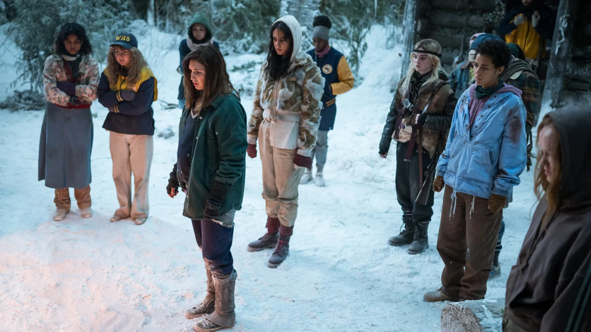

Three Season Summary
WARNING: May Contain Spoilers
Season 1 Summary:
In 1996, a high school girls' soccer team’s plane crashes deep in the Canadian wilderness. The survivors face extreme conditions and must endure 19 months before being rescued. The season shows their initial descent into chaos—facing hunger, infighting, and a growing sense of the supernatural. In the present day, some of the survivors—Shauna, Taissa, Natalie, and Misty—grapple with trauma and secrets as a blackmailer threatens to expose what really happened in the woods. Shauna, now a suburban mom, deals with infidelity and guilt; Taissa runs for state senate while hiding a dark alter ego; Natalie struggles with addiction; Misty remains creepy and manipulative. A mysterious cult-like force seems to still be influencing their lives. The season ends with the revelation that Lottie, once a teammate, may be leading a spiritual or cult-like following that has persisted since the wilderness.
Season 2 Summary:
Still stuck in the wilderness, the team suffers a brutal winter. Starving and desperate, the survivors turn to cannibalism, starting with Jackie’s frozen corpse and later forming a ritualistic practice around “The Wilderness” choosing who lives or dies. Lottie becomes more powerful, seen as a prophet or spiritual leader. Tensions rise as factions form, with violence and superstition escalating. In the present, the core women are pulled back together after Lottie's return—she now runs a wellness compound with cult-like features. Natalie is kidnapped and brought there. Each woman is forced to confront her trauma and past choices. Misty grows more erratic, and Shauna’s daughter Callie gets pulled into the unfolding drama. Taissa’s “other self” becomes more active, and her personal life unravels. The season culminates in a tragic and symbolic sacrifice: Natalie dies, mistaken by the cult as "the one chosen" by the wilderness. Her death is framed as redemptive, though it leaves the group shaken. In 1996, things only get darker as their morality continues to erode.
Season 3:
As of now, Season 3 has not aired yet (currently slated for 2025), but creators have teased it will explore even darker themes—possibly delving deeper into the group's survival tactics, the spiritual mythology of the forest, and how their wilderness identities continue to haunt them in adulthood. Expect more backstory, cult connections, and psychological unraveling.